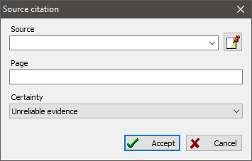

A link to a source is a specialized link valid only for person, family, and event records, that binds to a concrete information source. A link to a source has two additional properties: page or sheet number where the mentioning was made, and authenticity level for the information. Having page or sheet number is helpful when you need to review the source again. An authenticity level quickly shows you how much you can trust a source of information. When a source document has blots or damages, and you could not have read the text with assurance, you might assign the "Questionable reliability of evidence" level to such a source. This can prevent you from false conclusions.
Authenticity level also affects the authenticity index, which is calculated for a person in a statistics module to analyze arithmetic mean values. Tree diagrams use the authenticity level to make displayed information more obvious.

See also: Source, Person, Family, Event/fact.